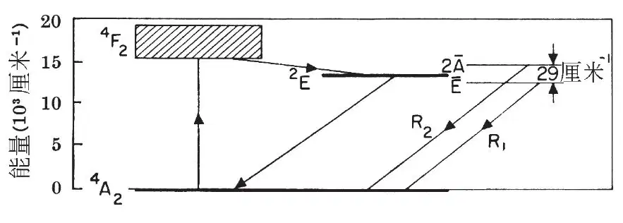
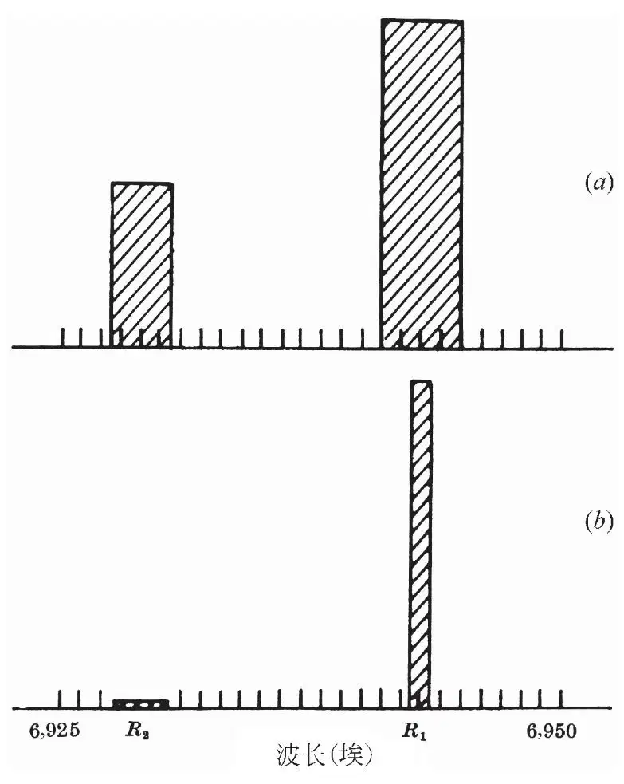

英文
英文梅曼
编者按
在20世纪初，阿尔伯特·爱因斯坦指出存在受激辐射跃迁现象，即一种特定频率的辐射是怎样从受激发介质中激发出更多同样频率的辐射的。这篇文章中，加利福尼亚州休斯研究实验室的西奥多·梅曼利用一块红宝石首次观察到了这种现象。这块红宝石的两端镀着反射型银膜，因此而形成的镜子构成了一个“光学谐振腔”，在这个“光学谐振腔”中光束反复地将处于激发态的镉离子激发并辐射出来。“受激辐射的光放大”是关于激光原理的第一次基本说明。 英文
肖洛和汤斯[1]提出了一种以碱金属蒸气作为工作介质产生单色性极高的红外光辐射的技术。贾范[2]和桑德斯[3]也讨论了在电子激发气体中产生这种辐射的若干方案。在本实验室中，我们已经成功地将光泵浦技术用于固体荧光材料中，并以此获得了负温度及波长为6,943埃的受激光辐射，其中所用的工作介质是红宝石（含铬的刚玉）。 英文
图1给出的是该晶体中三价铬离子的能级结构简图。当我们用波长约为5,500埃的能量照射此材料时，铬离子被激发到4F2态，然后通过非辐射跃迁迅速损失部分激发能而跃迁到2E态[4]。随后这个能态通过自发辐射而缓慢衰变，辐射产生了明锐的双线，它们在温度为300 K时的波长分别是6,943埃和6,929埃（图2a所示）。在高强度的激发条件下，处于亚稳态（2E）的粒子数将多于处于基态的粒子数，这就是产生负温度的条件，并最终导致受激辐射的光放大。 英文

图1．刚玉中Cr3+的能级图及相关的跃迁过程 英文

图2．红宝石的发射谱：a，低功率激发；b，高功率激发 英文
为了演示上述效应，我们用高功率的闪光灯照射一块尺寸为1厘米且两个平行表面都镀了银膜的红宝石晶体，在这种条件下得到的发射谱如图2b所示。这些结果可以用负温度的产生以及随后的再生放大来解释。我预期，原则上当采用模式选择技术时[1]谱线宽度将会有显著的（约108）减小。 英文
我非常感谢伯恩鲍姆、赫尔沃思、莱维特和萨滕与我进行了非常有益的讨论，也感谢黑内斯和浅轮等人在测量中提供的技术帮助。 英文
（沈乃澂 翻译；尚仁成 审稿）